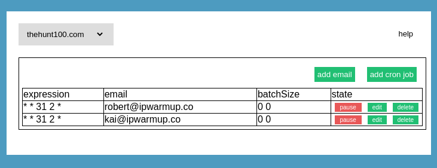

Use Crontab Guru to create a time schedule.
To use the scheduler you need to have a Email Relay Server. The scheduling rules will be applied to the Email Relay Server.
Servers > Add Server > Choose Server type: Email
Batch size is made of a total and a number of emails per batch run.
2 50
This will send 2 emails per run
and 50 in total.
A batch is scheduled over a period of 15 minutes. So it is best to schedule the start of a batch at the beginning of a quarter at 0, 15, 30, or 45 minutes.
There is a max per day limit of 30 emails combined with the emails of the warmer service it makes a total of 55 emails per day.

This is the cron format to schedule how your email is send out.
You could use crontab.guru to create the schedules that you need.